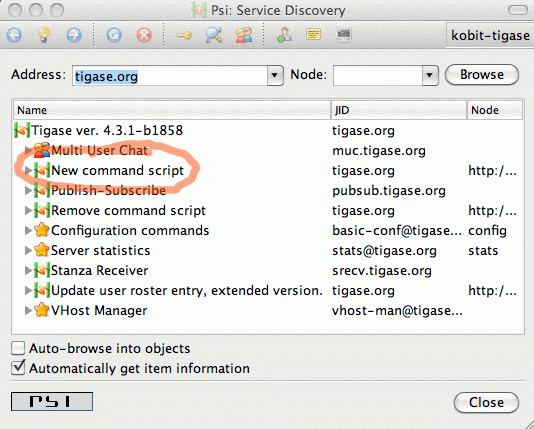
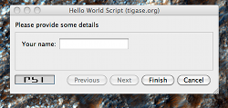
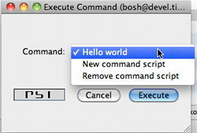

Tigase server supports scripting languages in versions 4.3.1 and higher. These pages describe this feature in details how to create new scripts, upload them to the server, and execute them. The guide also contains API description with code examples.
PLEASE NOTE Tigase server is known for it very low memory consumption and successfully runs with less then 10MB of RAM memory. However adding scripting support for any non-standard (default) language to Tigase server significantly increases memory requirements for the installation. You cannot expect Tigase server to run on 10MB RAM system if you enabled Python, Scala or any other non-standard language.
This document is the first in a series describing scripting support in the Tigase server showing how to load, install, update and call a script. It contains also an introduction to the scripting API with the first "Hello world!" example.
Since Tigase version 4.3.1 the server supports scripting for administrator commands as well as standard commands.
In theory many different languages can be used to write scripts and the only requirement is that support JSR-223 for the language is installed. More details can be found on the Java scripting project site.
In practice some languages are better supported than others, at the moment we recommend Groovy. However the following languages are also confirmed to be working: Scala, Python and Ruby. The Tigase SVN contains a few examples for these languages.
Please note, the default Tigase installation contains only libraries for Groovy. Adding support for a different language is as simple as copying a few JAR files to the Tigase libs/ directory.
All the examples presented in this guide are also available as ready to use scripts in the Tigase SVN repository in directory: src/main/groovy/tigase/admin.
The scripting utilizes only standard XMPP extensions and is by no means specific to any particular solution. We use and prefer Psi client. The whole guide and all the screen-shots are created using Psi client. You can, however, use any other client which supports these extensions as well. As the whole thing is based on the service discovery and ad-hoc commands you need a XMPP client with a good support for both features.
To follow the guide and run all the examples you need will need to have installed Tigase server version 4.3.1 or newer and you have to connect to the server as administrator.
All the scripting stuff is usually based on the service discovery and ad-hoc commands in the Tigase server.

The first thing to do, therefore, is to browse service discovery on the running server. The result you receive will depend on your installation and installed components.
The most interesting things right now are all items with "http://jabber.org/protocol/admin" in their node part. You may have a few scripts loaded already but there are two commands used for scripting management. Their names are descriptive enough: "New command script" and "Remove command script".
The first is for adding a new script or updating existing and the second is for removing script from the server.
To add a new script you have just to execute "New command script". In Psi this is done by double clicking on the element in service discovery list.

The screenshot above shows a couple of options to set for the loaded script:
- Description - is what shows as the script name in the service discovery window. There are no special restrictions on what to put there.
- Command id - is a unique ID of the script (admin command). This is what shows after the "http://jabber.org/protocol/admin" in node part. This needs to be unique or existing script is overwritten.
- Language - a drop down list of all supported scripting languages for your installation. Tigase automatically detects all libraries for scripting languages and lists them here. So all you need is to select the correct language for your script.
- Script text - is just your script content.
When your script is ready and all fields are correctly set, simply press "Finish" button and you should receive a message confirming that the script has been loaded successfully.

In this guide we are creating a simple "Hello world" script written in Groovy. What it does is displays a window (ad-hoc command result) with a message: "Hello admin, how are you?".
It uses a basic scripting API which is described line by line below:
- It imports basic Tigase classes.
- Set’s a local variable \'p' which points to a \'packet' variable with data received from the client.
- Creates a \'res' variable which is response sent back to the client (administrator). The response to the client is of type \'result'. Other possible types will be introduced later.
- We operate on ad-hoc commands here so the script uses Tigase utility class to set/retrieve command parameters. It sets the window title and a simple message displayed to the user (administrator).
- The last line returns new packet as a script execution result.
The first, very simple version looks like this:
import tigase.server.* def p = (Packet)packet def res = p.commandResult(Command.DataType.result) Command.addTitle(res, "Hello World Script") Command.addInstructions(res, "Hello admin, how are you?") return res
Once the script is successfully loaded you will have to reload/refresh the service discovery window which now should display one more element on the list.

As you can see script name is set to what you have entered as "Description" in script loading window - "Hello world script". The command node is set to: "http://jabber.org/protocol/admin#hello" if "hello" is what is set as the script ID.
To execute the script you just have to double click on the script name (or click execute command if you use any other client).
As a result you should see a simple window similar to the screenshot below displaying our message.

Displaying just a message is very nice but is not very useful in most cases. Normally you need to ask the user for some more data or parameters before you can perform any real processing.
Therefore in most cases the administrator script has to display a new window with input fields asking the user for some more data. In this document we present very simple examples, just an introduction so let’s ask about the administrator name before displaying a greeting.

To ask the user for some more information we have to extend example above with some more code:
import tigase.server.*
def p = (Packet)packet
def name = Command.getFieldValue(packet, "name")
if (name == null) {
def res = p.commandResult(Command.DataType.form);
Command.addTitle(res, "Hello World Script")
Command.addInstructions(res, "Please provide some details")
Command.addFieldValue(res, "name", name ?: "", "text-single",
"Your name")
return res
}
def res = p.commandResult(Command.DataType.result)
Command.addTitle(res, "Hello World Script")
Command.addInstructions(res, "Hello ${name}, how are you?")
return resIf you compare both scripts you see that they are quite similar. Before displaying greeting, however, the script tries to retrieve data from the \'name' input field. If the name had been provided the greeting is displayed, otherwise the script asks for the user name.

Please note, in this case the packet sent back to the user is of type form instead of result. The practical difference is that the type result displays only OK button which when pressed doesn’t send any data to the server. The form packet displays more buttons - Finish and Cancel. Whichever you press some data is sent back to the server.
This script demonstrates use of two new methods from the utility class "Command": getFieldValue and addFieldValue.
- The first argument to all Command methods is the packet with ad-hoc command.
- The second argument is usually the input field name
These two method parameters are actually enough to read the ad-hoc command data. Methods creating input fields in the ad-hoc command need a few arguments more:
- Next arguments sets a default value displayed to the user. The way to it is set in the example above is specific to Groovy language and is quite useful what will be apparent in later examples.
- After that we have to specify the field type. All field types are defined in the XEP-0004 article.
- The last argument specifies the field label which is displayed to the user.

There are a few other different utility methods in the Command class to set different types of input fields and they will be described in details later on.
To reload the script simply call "New command script" again, enter the script text and make sure you entered exactly the same command ID to replace the old script with the new one.
Or of course, you can enter a new command id to create a new command and make it available on your server.
When the script is loaded on the server, try to execute it. You should get a new dialog window asking for your name as in the screenshot at the beginning of this section. When you have entered your name and clicked the "Finish" button you will see another window with a greeting message along with your name.
The last thing described in this guide is how to automatically load your scripts when the Tigase server starts. The ability to load scripts at run time, update and remove remove them is very useful, especially in emergency cases if something wrong is going on and you want to act without affecting the service.
If you, however have a few dozens scripts you don’t want to manually load them every time the server restarts.
Tigase server automatically loads all scripts at the startup time which are located in the admin scripts directory. Unless you set it differently in the configuration it is: YourTigaseInstallationDir/scripts/admin/. All you have to do is to copy all your scripts to this directory and they will be loaded next time the server starts.
But hold on. What about the script parameters: language, description, command id? How are you supposed to set them?
Language is simple. It is detected automatically by the script file extension. So just make sure file extensions are correct and the language is sorted.
The script description and command id needs a little bit more work. You have to include in your script following lines:
AS:Description: The command description AS:CommandId: command-id AS:Component: comp_name
Please note, there must be at least a single space after the "AS:Description:" or "AS:CommandId:" string. Everything rest after that, until the end of the line, is treated as either the script description or command id. Put these in your script file and the loader will detect them and set correctly for your script.

Scripting functionality is quite useful in Tigase server for all sorts of administrator tasks. The possibility to load new scripts or replace old ones at the server runtime opens quite new area for the service maintenance.
In earlier versions of the Tigase server scripting capabilities was available only in the session manager component while it might be very useful in many other places - connection managers, MUC, PubSub, VHostManager and what even more important in completely new, custom components created for specific needs. It would be quite wasteful to reinvent the wheel every time and implementing scripting capabilities for each component separately.
Therefore the scripting capabilities has been implemented in the core of the Tigase server. It is now part of the API and is automatically available to all components without any additional coding. A detailed developer guide will be published separately.
This document describes changes from the user/administrator perspective because there are some usability changes related to the new implementation.
Please note. The description and screenshots are taken from the Psi client and most likely interface for ad-hoc commands and service discovery on other client looks different. I recommend to do some initial testing and experiments using Psi client and then switch to your preferred application for your day-to-day use.
As it always was in the Tigase you can access all the functions via XMPP service discovery on the server. However, as soon as you connect to the server you can see some changes there.

There are no command on the list. They are hidden from the main service discovery list. You can see on the list only the server main components.
This had to be done for many reasons. One of them is, obviously, the cleaner access to the main server stuff. Another, probably more important, is to avoid a long list of commands for different components mixed together. Commands for different components can have the same name/description and they can even do similar things but they are executed on a different server component. To avoid any confusion and minimise opportunities for mistake the commands are now closely tight to their components. To access a list of commands for a particular component you have to double click on the component name on the list or click 'Execute command" icon on top of the window when your component is selected.
A new window should show up with drop-down list of available commands. All the commands are related to the selected component and are executed kind of "inside the component environment". You can of course add new command or delete existing one and of course execute any of the commands showing on the list.

As a reminder, in the window title you can see the component ID and you should check it before running any command to make sure you accidentally don’t break your system.

There has been also a small change made to the script adding window. As you can see on the screenshot there is one additional option added - "Save to disk". This means that once you submitted the script to the server it is written to the hard drive and will be automatically loaded at next startup time.
This option is enabled by default as this seems to be a logical choice that the administrator wants to save his new script for later reuse. This, however requires proper configuration of the server and give writing permission to the directory where all scripts are stored. Otherwise the server won’t be able to write script files on the hard drive.
As in previous version only users with administrator permissions can execute commands and access all the critical elements on the server. There has been, however, another change made, long time requested by users. In the new version all the administrator specific elements are hidden for the rest of users.
Server components don’t show up on the service discovery, the user can’t see administrator commands nor he can execute them. This hasn’t been implemented to improve the server security but to reduce confusion for general users who would otherwise see a lot of stuff which can’t be used by them anyway.
As I mentioned in one of previous articles, Tigase supports virtually any scripting language as long as there is JSR-223 support for that language.
This article describes how to get Python working as a scripting language for ad-hoc commands in Tigase server. The first part is installation, and the second shows a few code examples with explanation of the differences between Python usage and some other languages.
Please note, we are not a Python developer, and by no means this is Python development guide. All the code examples are used only to present the API available and there are certainly better ways to do it in the proper Python style. If you have any suggestions or have a better code examples I am happy to include them in the guide.
In short, installation is extremely simple: just copy the file attached to this article to your Tigase installation, to the libs/ directory. Restart the server and you are ready to start scripting and executing Python.
In theory the Tigase offers scripting support defined in JSR-223. You can use any language for which there is such support for JVM. This includes also stand-alone python implementations and the JSR-223 plugins acts just as a bridge. This, however, does not make much sense as you are not able to interact with JVM code (Tigase API). Therefore you need a language which is executed within JVM and can easily exchange data between the main application (Tigase server) and the script.

The best way to go is to use Jython implementation. It works very well within JVM and more importantly, perfectly integrates with Tigase server. Tigase server is tested with Jython-2.2.1 and is confirmed to work fine. Version Jython-2.5.1 is recommended however, and all the examples are executed with this version installed. Please note, Jython-2.5.0 does not work at all. Both supported versions can be downloaded from the Jython website.
Version 2.5.1 is a bit simpler to install. When you download and run the Jython installer, find jython.jar file in the directory where you installed Jython. Copy the file to the Tigase’s libs/ directory and all is ready to go. Please note, this is the same file as the one attached to this article for your convenience.
Version 2.2.1 needs a little bit more work. The first part is the same. It is not, however enough to copy the jython.jar file. One more file is necessary for the Jython to work with the Tigase server. You have to install JSR-223 engine separately which can be downloaded from the Java scripting project website. The binary file has to be unpacked and jython-engine.jar file needs to be copied to the Tigase libs/ directory.
The best way to check if the Jython is installed correctly and support for Python is enabled, is by trying to submit a new script to the Tigase server. Browser the server service discovery, select "Session manager" component and run "Execute command" function. A new window should show with a list of all available ad-hoc commands. Select "New command script" item and click "Execute". Ad-hoc command dialog windows should show up. One of the field is "Language" with pull down list of available scripting languages. If "python" is on the list it means everything is ok and support for Python is enabled.

Python scripts work in a similar way to Groovy or other languages scripts, except one significant difference. You cannot call "return" from the script itself. Hence you cannot simply pass script results by calling "return" statement directly from the script.
To overcome the problem, Tigase offers another way to pass script execution results. It checks the value of a special variables on the script completion: "result" and "packet". By assigning value to one of these variables the Python (or any other language) can pass execution results back to the Tigase server.
- "result" allows to return simple text (or characters String) from the script.
- "packet" allows to return Packet instance which is send back to the user.
The simplest possible Python script may look like this one:
result = "Hello world!"
For instructions how to load and execute the script, please refer to the introductory article for scripting in Tigase server. There were some minor changes in Tigase 4.4.0 and later versions, so please have a look at the article describing new elements as well.
An example of a more advanced script asks the user for providing required parameters for the actual script execution:
from java.lang import * from tigase.server import * num1 = Command.getFieldValue(packet, "num1") num2 = Command.getFieldValue(packet, "num2") if num1 is None or num2 is None: res = Iq.commandResultForm(packet) Command.addTextField(res, "Note", "This is a Python script!") Command.addFieldValue(res, "num1", "") Command.addFieldValue(res, "num2", "") packet = res else: result = num1 + num2
Except this minor difference, the rest part of scripting in Python for the Tigase administrator commands is the same as all other languages. As all languages can return execution results via these special variables, it could be argued there is no difference at all.
In another article, I am going to present the Tigase server API available for scripting framework. My main language is Groovy as it offers the best integration with JVM and Tigase API, however I will try to include Python example code as well.
I hope this article encourages you to try the scripting support in the Tigase server. If you have any suggestions or questions please do not hesitate to send me your comments. I have also created a new tigase scripts forum on the website. If you have an interesting script to share or want to discuss some aspects of this functionality do not hesitate to add your post.
- jython-2.5.1.jar 6.44 MB